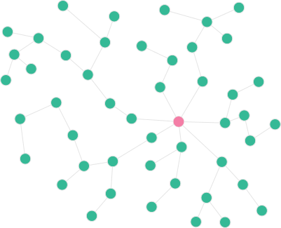
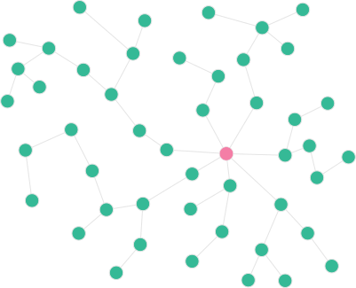
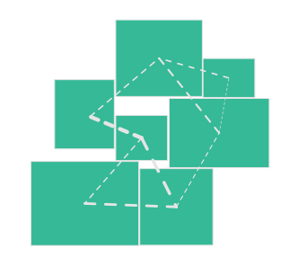
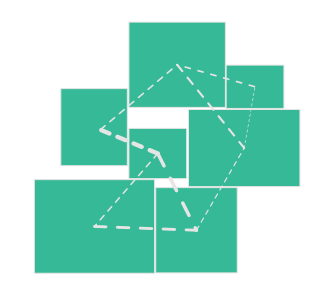
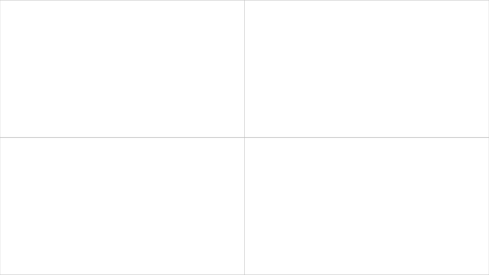
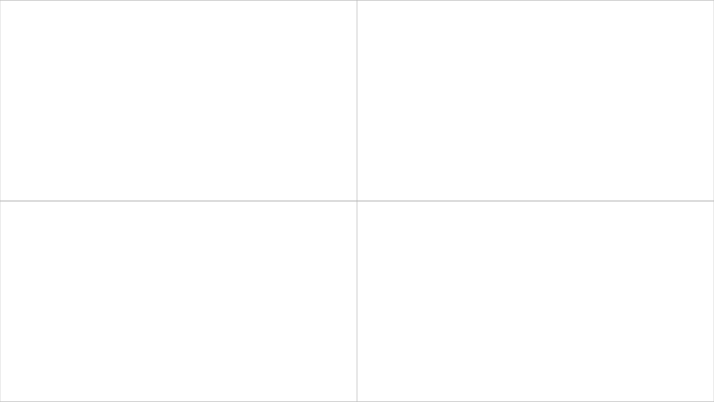
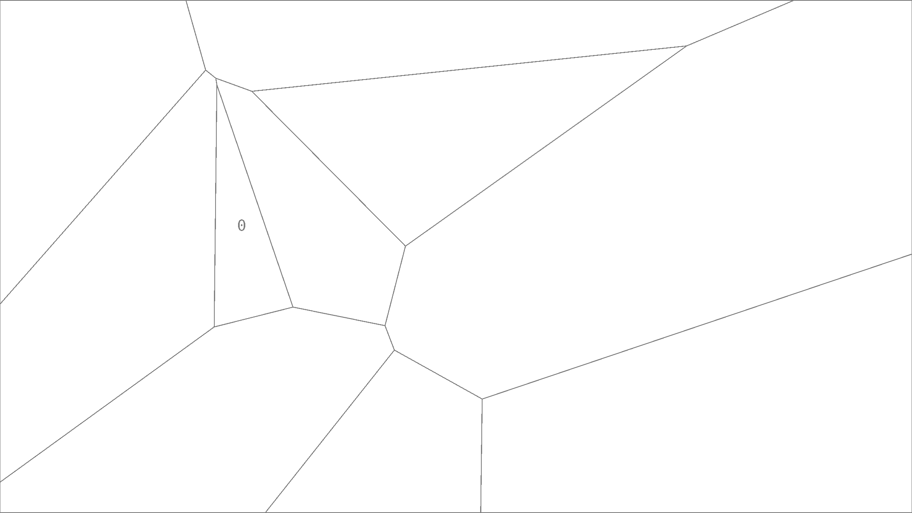
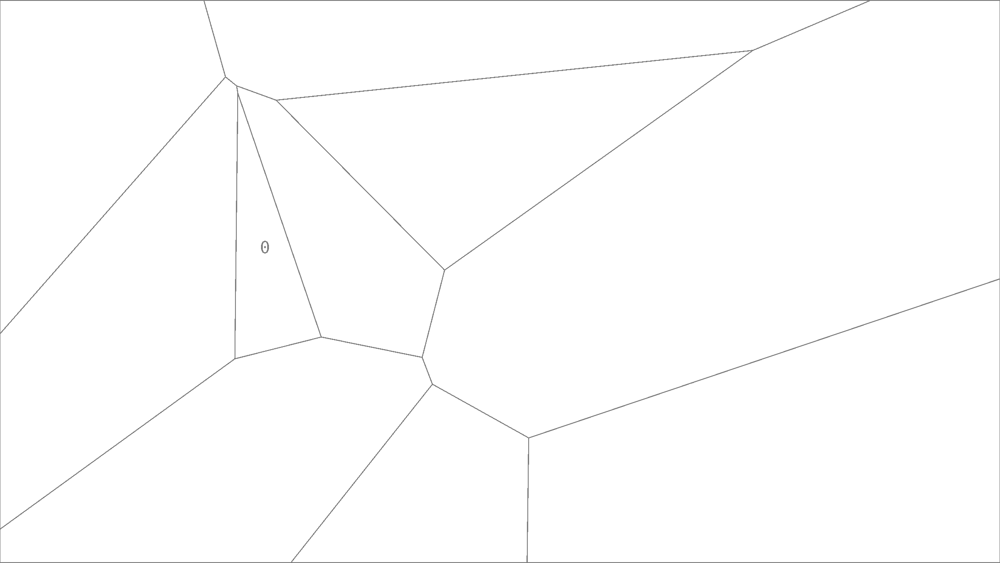
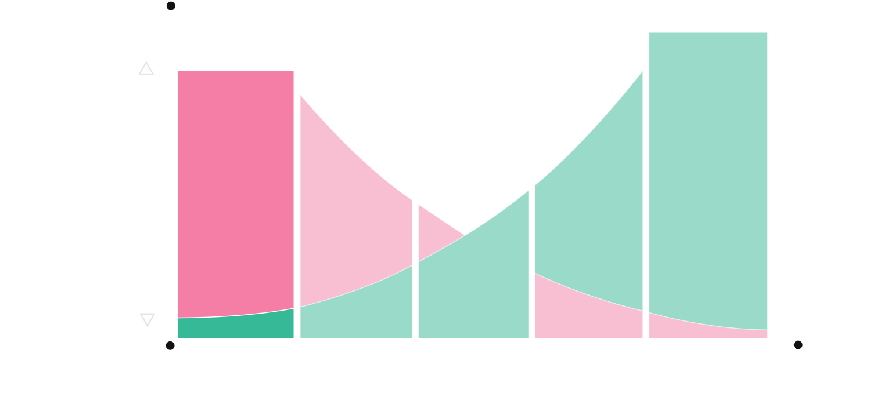

TOPOLOGICAL
GRAPHS IN
ARCHITECTURE
INTRODUCTION

- Graphs and Topology in Architecture
- Feedback in Early Design Stages
- Machine Learning in Architectural Design
- Synthetic Architecture Datasets
PRELIMINARIES


GRAPH THEORY


 



TOPOLOGY


 



SIMULATION


SYNTHETIC
DATASET
GENERATION
SPACE PARTITIONING

 


 


PARAMETRIC FRAMEWORK


ARCHITECTURAL RULES

POST-PROCESSING
GRAPH
MACHINE
LEARNING

GRAPH NEURAL NETWORKS

CLASSIFICATION

REGRESSION
OUTCOME


DATASET

RESULTS


CONCLUSION
Graphs and Topology in Architecture
Feedback in Early Design Stages

Machine Learning in Architectural Design
Synthetic Architecture Datasets
DISCUSSION